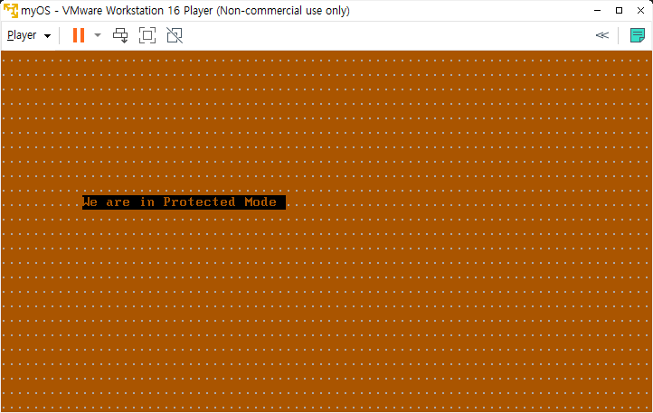
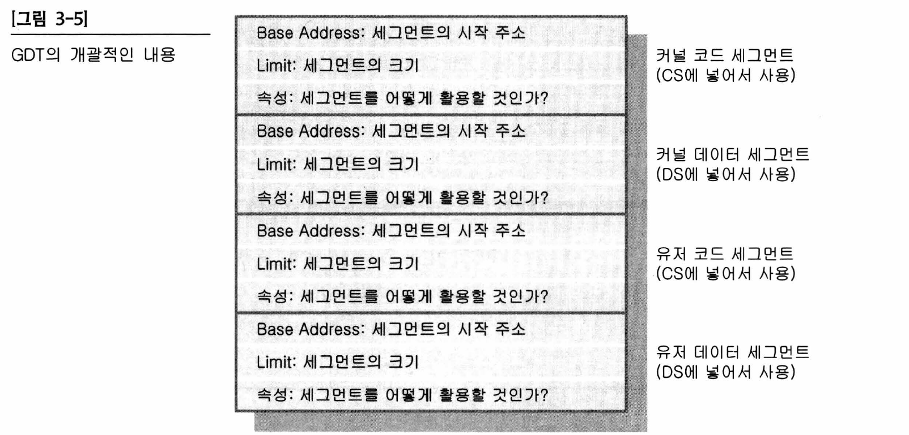
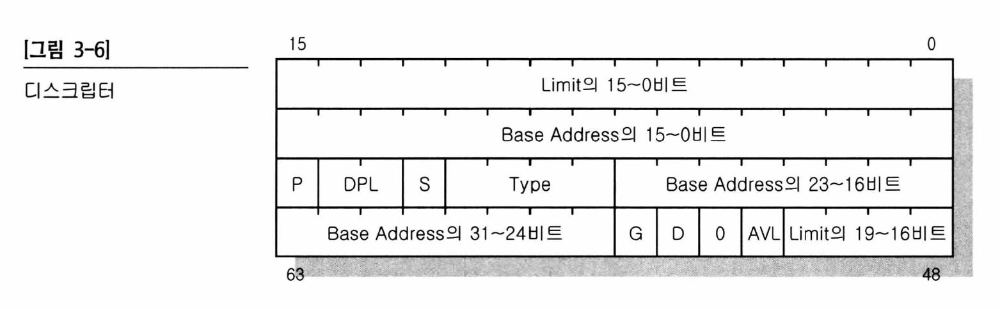
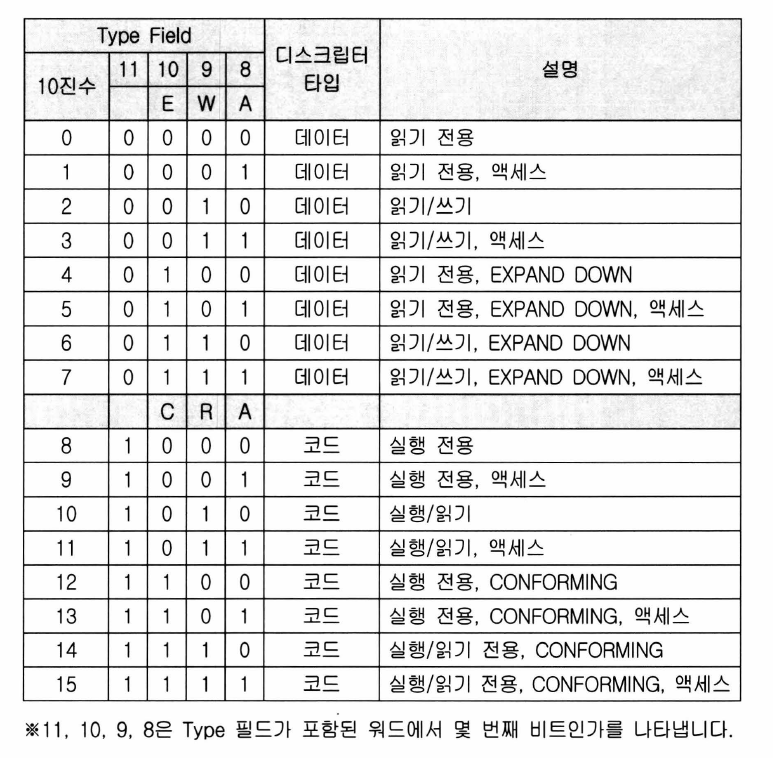
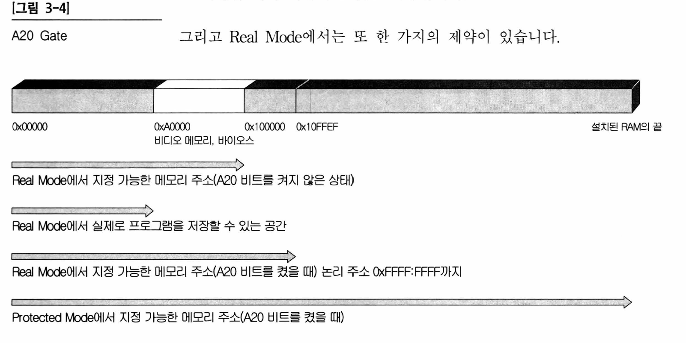

day 03: protected mode 진입하기
오늘 만든 결과물

소스코드
1 2 3 4 5 6 7 8 9 10 11 12 13 14 15 16 17 18 19 20 21 22 23 24 25 26 27 28 29 30 31 32 33 34 35 36 37 38 39 40 41 42 43 44 45 46 47 48 49 50 51 52 53 54 55 56 57 58 59 60 61 62 63 64 65 66 67 68 69 70 71 72 73 74 75 76 77 78 79 80 81 82 83 84 85 86 87 88 89 90 91 92 93 94 95 96 97 98 99 100 101 102 103 104 105 106 107 108 109 110 111 112 113 114 | |
GDTR의 정의
GDTR: The Global Descriptor Table (GDT) is a table in memory that defines the processor's memory segments. The GDT sets the behavior of the segment registers and helps to ensure that protected mode operates smoothly.
GDTR은 메모리 상에 존재하며, processor의 메모리 세그먼트를 정의하는 테이블입니다. GDT는 세그먼트 레지스터의 동작을 세팅하고 protected mode가 잘 동작하도록 보장합니다.
-
GDT는 x86 칩에 들어있는 GDT Register(=GDTR)라는 특수한 레지스터에 의해 지정됩니다(GDT is pointed by ...). GDTR은 48비트로 구성되며 하위 16비트는 GDT의 size에 대해 기술하며, 상위 32비트는 GDT의 메모리 상의 위치를 기술합니다.
-
GDTR의 layout
1 | |
LIMIT: GDT의 사이즈
BASE: GDT의 시작 주소
LIMIT의 사이즈는 GDT의 사이즈보다 1이 작습니다. 예를 들어서 GDT의 사이즈가 16 byte라면, LIMIT은 15로 지정되어야 합니다.
(https://en.wikibooks.org/wiki/X86_Assembly/Global_Descriptor_Table)
- GDT의 layout

위의 Base Address, Limit, 속성을 나타내는 것을 Descriptor라고 부르고, 그것이 모여있기 때문에 GDT-디스크립터 테이블 이라고 부릅니다.

-
GDT의 설명
-
Limit: 총 20비트로 구성(0~15, 16~19비트가 나뉘어져 있음). G비트와 함께 사용됩니다.
-
DPL(Descriptor Priviledge): 2비트로 되어 있으며, 특권 레벨 지정에 사용됩니다. 인텔 x86계열 CPU에서는 0~3의 값으로 4가지의 레벨이 있으나, 보통의 경우 커널을 제작할 때에는 0과 3레벨만 사용합니다. DPL값이 0이면 이 세그먼트가 커널 레벨이라는 것을 나타내고, 3이면 이 세그먼트가 유저레벨이라는 것을 나타냅니다.
-
Type: 4비트로 구성되어 있습니다. 해당 영역이 코드인지, 데이터 영역인지 + 읽기/쓰기 권한, 실행 권한에 대한 정보가 들어갑니다.

- Type Field의 최상위비트는 데이터 세그먼트인지 코드 세그먼트인지를 구분합니다.
- Type Field의 마지막 비트는 액세스 비트인데, 어떤 프로그램이 이 세그먼트에 접근했을 때 CPU가 이곳을 찾아서 A비트를 1로 바꿔줍니다. 그러나 CPU는 이 비트를 0으로 클리어 해주지는 않습니다. 커널은 메모리 관리를 할 때 이 비트가 1이 되었는지를 조사하거나, 액세스된 세그먼트의 디스크립터를 찾아 이 A비트를 어느 시간이 지나면 0으로 하거나 하는 일을 합니다. 이 비트는 커널의 메모리 관리를 도와주는 비트로 CPU 동작에는 아무런 영향을 주지 않습니다. GDT 초기화 시에는 0을 기재해 둡니다.
- Type Field의 두 번째 비트는 최상위 비트에 따라서 다르게 결정됩니다. 데이터 세그먼트(첫 번째 비트가 0인 경우)에서는 두 번째 비트가 1이면 EXPAND DOWN의 형태로 이 세그먼트가 형성된 것을 의미합니다. 두 번째 비트가 0이면 EXPAND UP 방식으로 세그먼트가 형성된 것을 의미합니다. 이 기능은 이 세그먼트를 스택으로 사용할 경우 세그먼트의 크기가 동적으로 변하도록 만들기 위함입니다. 이 비트를 1로 세팅하고 프로그램 실행 도중에 이 세그먼트의 Limit값을 바꾸면 스택의 제일 밑의 공간에 스택 공간이 추가됩니다. 스택 세그먼트는 항상 데이터 세그먼트여야 하고, 읽기/쓰기 모두 가능해야 합니다. 프로그램 실행 도중에 쓰기가 불가능한 세그먼트를 스택으로 하면, 다시 말해 SS 세그먼트 레지스터에 쓰기가 불가능한 데이터 세그먼트를 로드하면 #GP 폴트가 발생합니다.
- Type Field의 세 번째 비트를 0으로 하면, 이 세그먼트 영역은 읽기만 가능하고, 1로 하면 세그먼트를 읽기/쓰기 모두 가능해집니다.
-
G비트(Granularity): Limit과 관련되어 있습니다. G비트가 0이면 세그먼트 크기를 바이트단위, 1이면 4KB단위로 합니다. 즉 0이면 Limit 그대로 표현되고, 1인 경우에는 0xFFF(4KB)를 곱하여 그 수를 한계점으로 표현합니다.
- Limit의 20비트를 모두 채워서 0xFFFFF를 기재해 두었을 때, G가 0이면 크기는 1메가바이트, G가 1이면 0xFFFFF * 0xFFF = 0xFFFFFFFFFF바이트가 되어 4GB 영역을 갖게 됩니다.
-
P비트: 이 세그먼트가 메모리상에 존재하는지를 나타내는 값입니다. 이 비트는 커널 프로그램의 메모리 관리 루틴이 사용합니다. 페이징 기능과 관련이 있습니다. 처음에는 1로 기재해 둡니다.
-
S비트: 이 세그먼트가 시스템 세그먼트인지(=0), 코드 혹은 데이터 세그먼트인지(=1)를 지정합니다. 항상 1로 해줍니다.
-
D비트: 이 세그먼트가 16비트인지 32비트인지를 나타냅니다. 16비트(=0), 32비트(=1)
-
GDT의 구조
-
반드시 첫 번째 Descriptor는 NULL Descriptor(모든 내용이 0으로 가득 찬 Descriptor)여야 한다는 약속이 있습니다.
(참조: https://0xax.gitbooks.io/linux-insides/content/Booting/linux-bootstrap-2.html)
A20 gate
A20 gate를 지정하게 되면, 0x100000 이상의 주소를 지정할 수 있습니다.
Real Mode에서는 최대한 지정할 수 있는 메모리 주소는
0xFFFF:0xFFFF = 0xFFFF0 + FFFF = 0x10FFEF가 됩니다.
따라서 0x10FFEF까지 밖에 메모리 지정을 못 하는데,
심지어 0x0A0000주소 보다 큰 주소는 비디오 메모리, 바이오스에 의해 예약된 메모리 공간입니다.
A20 gate를 지정하게 되면, 0x100000(640KB) 이상의 주소를 지정할 수 있습니다.
여기에 Protected Mode+ A20 비트를 키게 되면 4GB까지 메모리에 접근할 수 있습니다.

Protected Mode 진입
Protected Mode에 진입하기 위해서는 Real Mode => Protected Mode 진입을 하기 전에 GDT(Global Descriptor Table)이라는 테이블을 준비해야 합니다. RAM의 영역 중 어디든지 기입할 수 있습니다. 이렇게 기입해 놓은 테이블은 Protected Mode로 변환 후에 컴퓨터의 전원이 내려질 때까지 그 자리에 있어야 합니다.